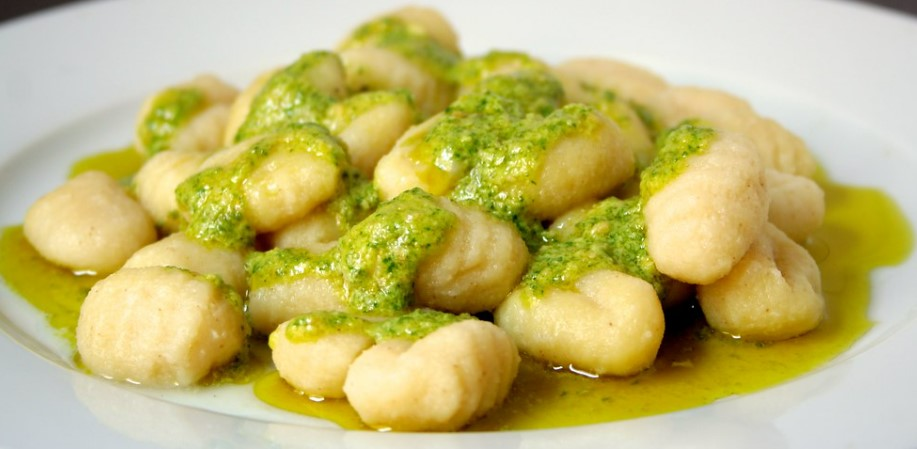

"La cucina è il cuore della casa, e il pesto ne è l'anima."
Come diceva Pellegrino Artusi: «La cucina è una bricconcella; spesso e volentieri fa disperare,
ma dà anche piacere, perché quelle cose che si fanno con più stento sono poi le più grate.»
L'acqua bolle a 100 gradi Celsiuse la formula chimica dell'acqua è H2O.
Il numero di Avogadro è 6,022 × 1023 mol-1.
// Metodo per preparare gli gnocchi al pesto
function preparaGnocchi() {
console.log("Lavare e asciugare il basilico");
console.log("Pestare aglio e sale nel mortaio");
console.log("Aggiungere pinoli e continuare a pestare");
console.log("Unire basilico e schiacciare fino a crema");
console.log("Incorporare formaggi e olio");
console.log("Cuocere gli gnocchi e condire con il pesto");
console.log("Servire caldo con guarnizione di basilico fresco");
}
preparaGnocchi();
Buon Appetito! - Ricetta Tradizionale Italiana